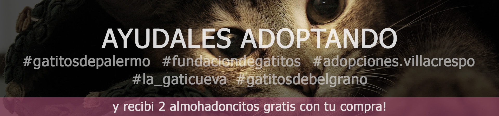

Nuestra materia prima
Elaboramos todos nuestros productos de manera 100% artesanal. Aportamos durabilidad, estabilidad y confort para cada rascador


Nuestros tubos son de cartón super prensado y rígido o madera de pino maciza (depende el modelo), forrados en fibra natural de yute trenzado
y/o sisal (depende el stock), de 5mm o 6mm de 3 cabos que le dan el máximo rendimiento y durabilidad a los rascadores, algo esencial para que nuestros gatitos utilicen para sus uñas, y que las estructuras no se deformen con el tiempo.
Adicionalmente estamos incorporando alfombras de alto tránsito de 3mm como alternativa más económica para toda la línea de productos.
EN PREPARACION
Abona con cualquier forma de pago


Retiralo o recibilo en tu domicilio